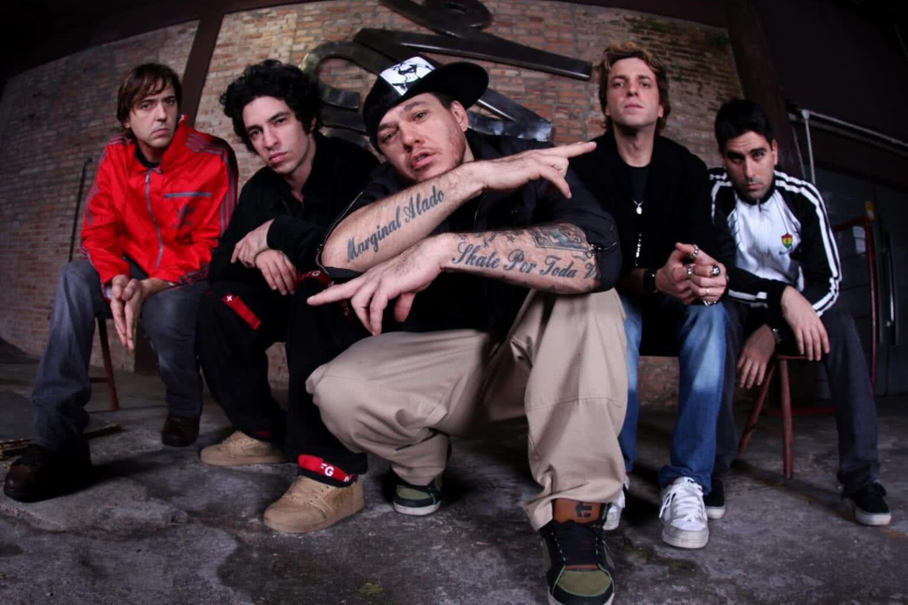

o inicio
Por volta dos 21 anos, Alexandre (Chorão) esteve em um bar de Santos chamado Creperie, bêbado e
assistia ao show de uma banda. O vocalista saiu para beber água e Alexandre subiu ao palco.
Teria dito: “Aí, agora é comigo!".
Com o microfone, Chorão cantou improvisadamente uma letra do Suicidal Tendencies. Apesar de
estar embriagado, uma pessoa da plateia, ao vê-lo cantar, fez um convite para integrar sua
banda.
primeira formacão
Em 1990, quando o baixista saiu, Champignon, com apenas 12 anos de idade, foi apresentado a
Chorão por músicos conhecidos que frequentavam o mesmo estúdio do cantor, na cidade de São
Vicente, para fazer um teste para baixista. Os dois formaram então a banda What's Up.
Em 1993, se juntaram à dupla os guitarristas Marcão Britto e Nando Bassetto e o baterista Vini.
Pouco tempo depois, Vini e Nando Bassetto foram substituídos por Renato Pelado e Thiago
Castanho, respectivamente, completando a primeira formação do grupo, que ainda não tinha nome.


nome da banda
O nome Charlie Brown Jr. só foi escolhido pouco tempo após a formação clássica da banda, quando
Chorão atropelou uma barraca de água de coco com o desenho do personagem Charlie Brown. O "Jr."
foi acrescido, nas palavras de Chorão, "pelo fato de sermos filhos do rock", inspirado por
músicos do rock brasileiro à época como Raimundos, O Rappa, Nação Zumbi e Planet Hemp.
primeiro álbum
Tadeu Patolla, cunhado de uma namorada do Champignon apresentou a fita demo da banda a um amigo,
presidente da Virgin Records no Brasil e produtor dos Mamonas Assassinas. Bonadio gostou do som
da banda e os contratou. Nasce então o álbum Transpiração Contínua Prolongada, produzido por
Tadeu Patolla e Rick Bonadio com o selo da Virgin. Lançado em 1997, o disco vendeu por volta de
500 mil cópias, e foi bem recebido pelas rádios, que executaram faixas como "O Coro Vai Comê!",
"Proibida pra Mim (Grazon)", "Tudo que Ela Gosta de Escutar" e "Quinta-Feira".